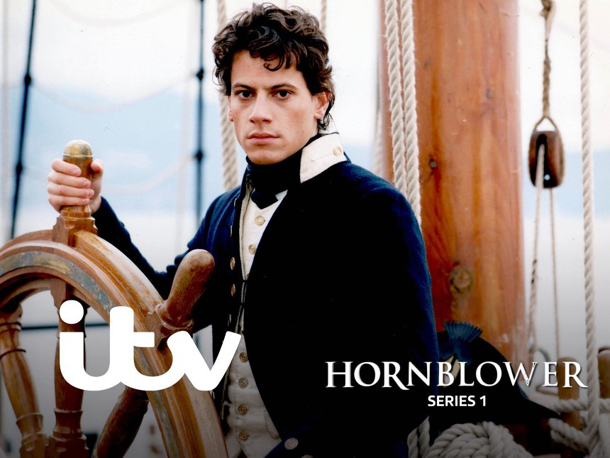
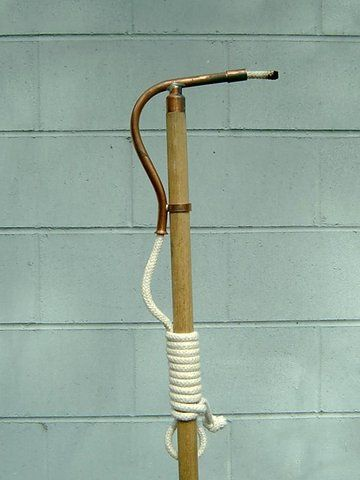

나폴레옹 시대 영국 전함의 전투 광경 - Lieutenant Hornblower 중에서 (1)
게시: 2019-02-25T06:30:00+09:00
이제 나폴레옹의 러시아 침공 서전이 시작되어야 하는데, 제가 요즘 다사다난하여 책을 못 읽고 있습니다. 최소 몇 주 간은 C. S. Forester의 Lieutenant Hornblower 중에서 제가 무척 재미있게 읽었던 부분을 발췌 번역해서 올리겠습니다. 개인적으로 혼블로워 시리즈 중에서 최고 역작이라고 생각하는 이 책은 국내 연경사에서 '혼블로워. 2: 스페인요새를 함락하라'라는 제목으로 발간되었습니다. 제 발췌 번역본은 여러분의 호기심을 자극하는 수준에서 중단될텐데, 재미있다고 생각되시면 영문판이든 한글판이든 꼭 읽어보시기 바랍니다.

Lieutenant Hornblower by C.S. Forester (배경 : 1801년 카리브 해 HMS Renown 선상) --------------
(부시와 혼블로워가 각각 제3, 제5 부관으로 탑승한 영국 해군의 74문짜리 전함 리나운 호(HMS Renown)는 산토 도밍고 섬의 스페인 해군 요새를 파괴하고 그 곳의 스페인 선박들을 나포하거나 격침시키라는 명령을 수행하기 위해 카리브해에 도착합니다. 항해 도중에 함장이 미쳐버리는 사고가 발생하여 함장은 함장실에 연금되고 제1 부관인 버클랜드가 임시 함장직을 수행하고 있는 상태입니다. 그다지 뛰어난 지휘관이 아닌 버클랜드는 별다른 계획없이 그냥 스페인 요새의 항구로 밀고 들어가 일제 포격을 하려 합니다.)
저녁 당직(dogwatches : 원래 4시간 단위의 교대근무 시간을 4pm~8pm 사이에는 2시간짜리 2개로 쪼개는데 이걸 dogwatch라고 불렀습니다 : 역주) 시간 동안 혼블로워는 뭔가 골똘히 생각하듯이 머리를 숙인 채 혼자서 갑판을 왔다갔다 걸었다. 등 뒤로 맞잡은 혼블로워의 두 손이 초조하게 꿈틀거리고 배배 꼬이는 것이 부시의 눈에 들어왔다. 부시는 잠깐 의심이 들었다. 이 열정적인 젊은 장교에게 혹시 신체적 용기가 없는 것이 가능한 일일까 ? 그 표현은 부시의 창작품은 아니었다. 그는 그 표현이 몇 년 전 어디서인가 악담으로 사용되는 것을 들었었다. 혼블로워가 겁장이일 수도 있다고 대놓고 스스로 짐작하는 것보다는 차라리 이 표현을 지금 쓰는 것이 더 나았다. 부시는 그다지 관대한 사람이 아니었다. 만약 어떤 사람이 겁장이라면 그는 그 인간과는 뭐든 더 같이 하고 싶은 생각이 없었다.
다음날 아침이 절반 정도 흘렀을 때 갑판을 따라 호각들이 길게 울렸다. 해병들의 북이 두두두 소리를 냈다.
"전투 준비를 위해 갑판을 치운다 ! 각자 위치로 ! 전투 준비 !" ("Clear the decks for action! Hands to quarters! Clear for action!" 전투가 벌어지기 전에, 갑판 아래의 선실을 이루는 격벽이나 식탁 등의 가구, 짐짝 등을 모두 치워 선창에 보관합니다. 그래서 전투 준비에 clear라는 말을 쓰는 것입니다. : 역주)
부시는 전투시 자신의 위치인 하(下) 포갑판(lower gundeck)으로 내려갔다. 하 포갑판 전체와 우현의 24파운드 포 17문이 그의 지휘 책임 하에 있었고, 좌현의 포들은 그의 밑에 있는 혼블로워가 맡게 되어 있었다. 수병들은 이미 칸막이를 해체하고 방해물들을 치우고 있었다. 갑판을 따라 군의관 조수들 한 무리가 내려왔는데, 그들은 구속복(straight jacket)을 입인 채 널빤지에 묶어놓은 사람 하나를 떠매고 왔다. 구속복과 결박 끈에도 불구하고 그 사람은 힘없이 꿈틀거리며 처량하게 울고 있었다. 전투 준비 때문에 함장실을 치우면서 함장을 닻줄 선창(cable tier, 닻줄을 말아두는 맨 바닥 갑판, 대포알이 흘수선 아래를 뚫는 경우는 거의 없었으므로 선창은 상대적으로 매우 안전한 곳이었습니다 : 역주)으로 내려보내는 것이었다. 그런 북적거림 속에서도 한두 명의 수병들은 그런 함장의 몰골을 보고는 고개를 절레절레 저었는데, 부시는 재빨리 그들에게 주의를 주었다. 그는 하 포갑판이 전투 준비 완료가 되었다는 보고를 칭찬받을 만한 시간 안에 올리고 싶었다. 혼블로워도 나타나서 부시에게 경례를 하고는 그의 함포들을 감독하며 서있었다. 이 하갑판의 대부분 구역은 새벽놀 무렵의 어둠에 덮혀 있었다. 상갑판으로 통하는 햇치 통로들(hatchways)로 들어오는 굵은 햇빛 줄기들은 진한 빨간색 페인트로 칠해진 갑판의 저 구석까지는 거의 밝혀주지 못했기 때문이었다. 군함의 보이들 6명이 모래를 담은 버켓을 들고 와서 갑판 여기저기에 한주먹씩 뿌렸다. (매끄러운 갑판 위에서 피와 물기로 인해 미끄러지는 사고를 방지하기 위한 것입니다 : 역주) 부시는 그들의 작업을 날카로운 눈으로 감독했다. 포수들이 미끄러지지 않으려면 그 모래가 꼭 잘 뿌려져야 했기 때문이었다. 각 함포 옆마다 물을 가득 채운 버켓을 놓아두었는데, 이건 포구를 청소하는 장전봉의 헝겊뭉치를 적시기 위한 것이기도 했지만 혹시 화재가 발생할 경우 즉각 진화하기 위한 것이기도 했다. 주돛대의 주변에는 여분의 소화용 물통이 둥글게 놓여 있었다. 군함의 양현에 있는 통에는 화승(slow match)이 천천히 타들어가고 있어서, 만에 하나 어느 함포의 화승간(火繩桿, linstock, 끝에 화승이 달린 막대기 : 역주)의 불이 꺼질 경우 그 함포 조장이 여기서 다시 불을 붙일 수 있었다. 불과 물이 준비된 셈이었다. 낮은 천정 들보에 닿을 듯 높은 군모(shako)를 쓰고 선홍색 자켓과 하얀 십자밴드를 맨 해병들이 보초 임무를 위해 갑판 위를 쿵쿵거리며 뛰어왔다. 그린우드 상병은 각 햇치 통로에 장전하고 착검까지 한 보초를 한 명씩 세웠다. 그들의 임무는 겁을 먹고 안전한 흘수선 아래 구역으로 도망치려는 사람이 없도록 인가되지 않은 어떤 사람도 햇치 통로로 내려가지 못하도록 하는 것이었다. 임시 포술장인 미스터 홉스는 조수들과 함께 잠깐 나타났다가 곧 저 아래의 화약고(magazine)로 사라졌다. 그들은 모두 가장자리 천으로 만든 슬리퍼(list slippers)를 신고 있었는데, 이는 전투가 한창일 때 어쩔 수 없이 바닥에 흩뿌려질 약간의 화약가루가 폭발할 위험을 없애기 위한 것이었다.

(Linstock의 모습입니다. 그냥 화승막대기입니다. 이걸 대포의 점화구 즉 touchhole에 대면 대포가 발사되는 것이지요.)
* PS1 : Dogwatch라는 독특한 2시간 짜리 교대 순번을 만든 이유는 2가지입니다. 하나는 2교대로 돌아가는 군함의 교대 근무에서, 이렇게 2시간 짜리 순번이 없을 경우 어느 한쪽 교대조가 계속 특정 시간대(가령 0시~4시)에 근무를 서야 하는 불공평함을 해결하기 위해서입니다. 다른 하나는 그 4시간 중에 모든 수병들이 저녁 식사를 하고 쉴 시간을 주기 위해서입니다.
* PS2 : 저 list slipper라는 단어는 19세기 문학 작품 여기저기에 나오는, 영어권 사람들로서도 약간 신기한 단어인 모양이더라구요. List라는 것은 천의 가장자리를 뜻하는 것인데, 천의 가장자리는 실이 풀리는 것을 막기 위해 조금 견고하게 처리가 되어 있지요. 그런 두꺼운 천으로 만든 슬리퍼를 list slipper라고 부르는 모양입니다. 딱딱한 밑창을 가진 구두를 신었다가 구두 바닥과 갑판 사이에 낀 화약가루가 마찰열로 폭발할 것을 염려하는 것 같습니다. List slipper라는 단어에 대한 토론은 아래 link를 참조하세요.